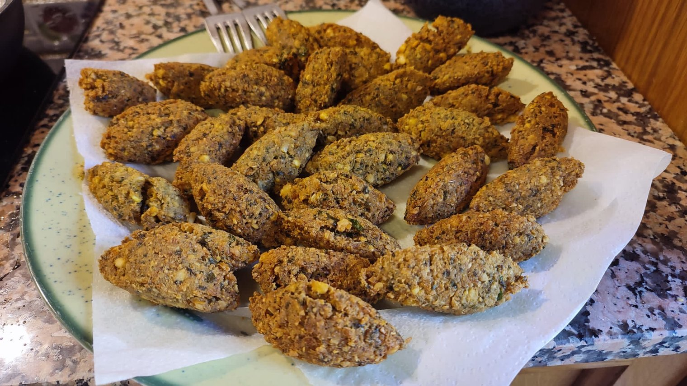

Falafel
Ingredients
4×
- 250 g de garbanzos secos
- 1 cebolla
- 2 dientes de ajo
- un manojo de perejil y cilantro
- 1 cdta de comino
- 1 cdta de cilantro molido
- sal
- aceite

Preparación
Paso 1
Dejar en remojo 250 g de garbanzos secos durante 12h. Escurrir bien (no cocerlos).
Paso 2
Triturar los garbanzos con 1 cebolla, 2 dientes de ajo, un manojo de perejil y cilantro, 1 cdta de comino, 1 cdta de cilantro molido y sal, hasta tener una masa granulada que se pueda moldear.
Paso 3
Formar croquetas alargadas con dos cucharas y freírlas en aceite bien caliente hasta que estén doradas. Escurrir sobre papel de cocina.